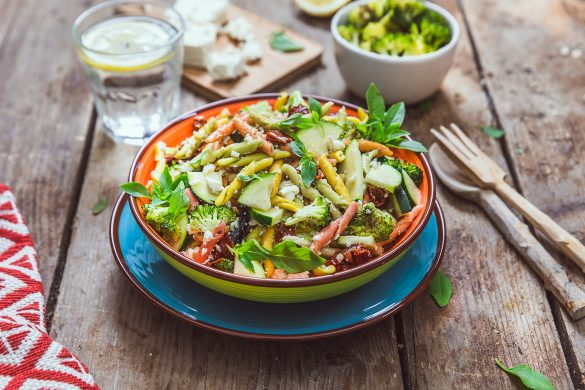

Salade de pâtes aux légumes

Aujourd’hui je vous retrouve avec ma recette favorite du moment! Il s’agit d’une salade de pâtes aux légumes avec des brocolis, des courgettes, des tomates séchées, de la feta, du basilic et quelques gouttes de jus de citron.
Comme vous avez pu le lire plus haut, il s’agit d’une salade de pâtes composée et haute en couleurs!! J’adore cette période de l’année car on peut vraiment innover tous les ans en terme de salade, jouer avec les couleurs, les saveurs et y mettre tout ce qui nous fait plaisir. Les salades maïs concombre tomates ça dépanne mais on peut aussi changer un peu histoire de faire varier les plaisirs de chacun 😉 Comme vous pouvez le voir cette salade est complète, les brocolis passent très très bien (pour ceux qui n’aiment pas), j’ai laissé la courgette crue (que vous pouvais aussi remplacer par un concombre si vous préférez), et j’y ai ajouté des tomates séchées que j’ai fait moi-même et j’en suis fière car c’était très bon!! Bref si vous avez peu de temps pour cuisiner, que votre chéri a besoin d’emporter son repas, ou que vous devez manger sur le pouce au boulot cette salade est parfaite. Je vous laisse découvrir tout ça plus bas et si vous réaliser cette recette dîtes moi ce que vous en avez pensé!!
Ingrédients
- Pâtes de votre choix - 200g
- Huile d'olive - 2 càs pour la cuisson des brocolis et 2 càs pour l'assaisonnement
- Ail - 1 ou 2 gousses selon vos goûts
- Brocolis - 1 tête de brocolis
- Feta - 100g
- Tomates séchées - 8-10
- Courgette - 1/2
- Feuilles de basilic
- Sel, poivre
- Jus d'un demi citron
- Noix de cajou ou amandes - 1 poignée
Instructions
- Préchauffer le four à 180°C
- Nettoyez votre tête de brocolis et découpez les sommités grossièrement
- Mélangez les sommités avec deux cuillères à soupe d'huile d'olive, du sel, du poivre et l'ail écrasé
- Déposé les sommités de brocolis sur une plaque allant au four
- Enfournez pour 15 minutes environ (surveillez la cuisson, goûtez et poursuivez ou arrêtez la cuisson mais normalement 15 minutes suffisent)
- Sortir du four et laissez refroidir
- Pendant ce temps, cuire les pâte al dente
- Passez-les sous l'eau froide, égouttez-les et arrosez-les d'huile d'olive (2càs environ)
- Coupez grossièrement les tomates séchées et les courgettes en "demi quarts"
- Mélangez les légumes avec les pâtes
- Salez, poivrez, ajoutez le jus d'un demi citron
- Au moment de servir émiettez la feta au dessus de la salade, ajoutez des petites feuilles de basilic et mélangez
- Parsemez de noix de cajou (ou amandes) concassées au dessus de la salade
Les tips de la communauté
Recette bien reçue comme plat sain, gourmand et rassasiant. Les commentaires apprécient la polyvalence et la possibilité d'utiliser différentes céréales au lieu des pâtes froides.
Astuces
- Utiliser de la semoule ou du quinoa à la place des pâtes pour varier
- Idéale pour les repas d'été légers et équilibrés
- Peut être enrichie de protéines variées pour un repas plus complet
Variantes suggérées
- Remplacer les pâtes par du quinoa ou de la semoule
- Ajouter des protéines (poulet, œufs, tofu) pour un repas plus équilibré
Ajustements signalés
- donc varier les garnitures et les céréales. Je n’aime pas trop les pâtes froides mais avec de la semoule ou du quinoa, c’est bien aussi !